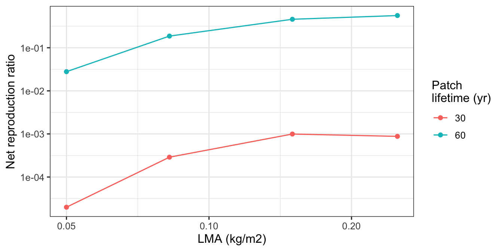

library(plant)
library(ggplot2)
library(dplyr)
theme_set(theme_bw(base_size = 12))
outdir <- file.path(tempdir(), "sweep")Running sweeps in parallel
workflow
Most plant analyses end up as a sweep: run the same model over a grid of parameters, save one result per combination, then compare. A single FF16 patch takes about a second, a TF24 patch minutes, and a community assembly tens of minutes — so the difference between running a grid serially and running it across cores is the difference between a coffee break and a lost afternoon.
Sweeps are also embarrassingly parallel: no job needs anything from another job. That leaves two questions, and the second is the one that bites. How do you hand jobs to cores? And how do you know afterwards which results are current? This guide works through three answers of increasing sophistication, on one grid throughout:
- serial
lapply()— the baseline worth measuring against; parallel::mclapply()— one extra line, most of the speedup;- a
targetspipeline — for when the sweep becomes something you maintain.
If you have not yet run a single patch, start with Patch dynamics and Example analysis; this guide assumes both.
Start with a manifest, not a loop
Every approach here shares one idea: a table with one row per job, carrying the parameters, a human-readable id, and the output filename. Build it with a function rather than typing a CSV, so it can be re-derived, diffed, and extended:
sweep_grid <- function(lma = c(0.05, 0.0825, 0.15, 0.25),
max_patch_lifetime = c(30, 60),
birth_rate = 17.31,
dir = outdir) {
grid <- expand.grid(lma = lma, max_patch_lifetime = max_patch_lifetime,
KEEP.OUT.ATTRS = FALSE)
grid$birth_rate <- birth_rate
grid$id <- sprintf("lma%g-T%g", grid$lma, grid$max_patch_lifetime)
grid$file <- file.path(dir, paste0(grid$id, ".rds"))
grid[order(grid$id), ]
}
# Rows as a list of lists: the shape lapply(), mclapply() and targets all take.
sweep_rows <- function(grid) {
unname(lapply(split(grid, seq_len(nrow(grid))), as.list))
}
grid <- sweep_grid()
grid |> select(id, lma, max_patch_lifetime, birth_rate) id lma max_patch_lifetime birth_rate
1 lma0.05-T30 0.0500 30 17.31
5 lma0.05-T60 0.0500 60 17.31
2 lma0.0825-T30 0.0825 30 17.31
6 lma0.0825-T60 0.0825 60 17.31
3 lma0.15-T30 0.1500 30 17.31
7 lma0.15-T60 0.1500 60 17.31
4 lma0.25-T30 0.2500 30 17.31
8 lma0.25-T60 0.2500 60 17.31Two rules make everything downstream work. Every parameter that changes the result must appear in id — otherwise two jobs write to one filename and the second silently overwrites the first. And the filename is derived, never typed, so exactly one place knows where a result lives.
One job, one function, one file
The job is an ordinary function of one manifest row. It refines the node-introduction schedule, runs the patch, and returns summaries; a thin wrapper saves the result and returns the filename:
run_patch <- function(row) {
p0 <- scm_base_parameters("FF16")
p0$max_patch_lifetime <- row$max_patch_lifetime
p1 <- add_strategies(p0, trait_matrix(row$lma, "lma"),
birth_rate = row$birth_rate)
pars <- run_scm(p1, refine_schedule = TRUE)$parameters
out <- run_scm(pars, collect = TRUE)
list(row = row, totals = patch_totals(out),
emergent = emergent_summary(out))
}
run_job <- function(row) {
dir.create(dirname(row$file), showWarnings = FALSE, recursive = TRUE)
saveRDS(run_patch(row), row$file)
row$file
}Summary helpers: patch_totals() and emergent_summary()
# One row per recorded time: patch totals plus mean size per individual. See
# Example analysis for what integrate_over_size_distribution() does.
patch_totals <- function(out) {
tot <- integrate_over_size_distribution(FF16_expand_state(out)$species)
for (v in c("diameter_stem", "area_stem", "area_leaf", "height",
"mass_above_ground")) {
tot[[paste0(v, "_av")]] <- tot[[v]] / tot$density
}
tot
}
# One row per job: the scalars worth comparing across the grid.
emergent_summary <- function(out) {
tot <- patch_totals(out)
n <- nrow(tot)
data.frame(net_reproduction_ratio = out$net_reproduction_ratios[[1]],
offspring_production = out$offspring_production[[1]],
lai_max = max(tot$area_leaf, na.rm = TRUE),
basal_area_final = tot$area_stem[n],
density_final = tot$density[n],
height_av_final = tot$height_av[n])
}Note what the job saves. run_scm(collect = TRUE) returns roughly 1.4 MB of solver state per run, while the totals and scalars an analysis actually consumes come to about 35 kB. Deciding what a job’s artefact is — rather than reflexively saving everything — is the cheapest performance decision in a sweep, because every later read pays for it.
The serial baseline
Always measure this first. It tells you whether parallelism is worth any complexity, and it is the reference your parallel results must match:
rows_small <- sweep_rows(head(grid, 4))
t_serial <- system.time(files_serial <- lapply(rows_small, run_job))
t_serial[["elapsed"]][1] 2.433Four patches on one core, written to the filenames the manifest promised:
basename(unlist(files_serial))[1] "lma0.05-T30.rds" "lma0.05-T60.rds" "lma0.0825-T30.rds" "lma0.0825-T60.rds"mclapply(): one line, most of the win
parallel::mclapply() is lapply() with an mc.cores argument. For a sweep that is genuinely all the change required:
workers <- max(1L, min(4L, parallel::detectCores() - 1L))
t_par <- system.time(
files_par <- parallel::mclapply(sweep_rows(grid), run_job,
mc.cores = workers,
mc.preschedule = FALSE)
)
c(workers = workers,
serial_4_jobs = t_serial[["elapsed"]],
parallel_8_jobs = t_par[["elapsed"]]) workers serial_4_jobs parallel_8_jobs
4.000 2.433 1.752 Twice the jobs in less than the serial time for four. Three details matter more than the speedup itself.
mc.preschedule = FALSE load-balances. With prescheduling on (the default), jobs are dealt to workers up front, so one slow job strands a whole worker’s queue behind it. Patch run times vary several-fold with max_patch_lifetime, so turning it off is usually right.
Forking is why this suits a development build. mclapply() forks the current session, so workers inherit the already-loaded plant namespace and its compiled library — including a pkgload::load_all() dev build. A PSOCK or future::multisession cluster instead spawns fresh sessions that see only the installed package, which quietly runs code you are not testing. The costs of forking are that it does not exist on Windows (mc.cores is ignored, so keep the serial path working) and that it is unreliable inside the RStudio GUI — run sweeps from a terminal. On Windows, or when workers must outlive one session, mirai and future/furrr are the alternatives, at the price of installing plant into the workers.
mclapply() does not stop on error. A failed job returns a try-error object in the result list while everything else succeeds, so a broken sweep can look complete. Check explicitly, every time:
failed <- vapply(files_par, inherits, logical(1), "try-error")
sum(failed)[1] 0Reading results back
The manifest doubles as the query interface. Ask what exists:
sweep_status <- function(grid) {
info <- file.info(grid$file)
grid$exists <- file.exists(grid$file)
grid$size_kb <- round(info$size / 1e3, 1)
grid$modified <- info$mtime
grid
}
sweep_status(grid) |> select(id, exists, size_kb) id exists size_kb
1 lma0.05-T30 TRUE 25.5
5 lma0.05-T60 TRUE 30.0
2 lma0.0825-T30 TRUE 25.5
6 lma0.0825-T60 TRUE 31.5
3 lma0.15-T30 TRUE 26.4
7 lma0.15-T60 TRUE 32.4
4 lma0.25-T30 TRUE 25.5
8 lma0.25-T60 TRUE 32.5…then bind the finished jobs into one table and compare across the grid:
collect_emergent <- function(grid, files = grid$file) {
done <- grid[grid$file %in% files & file.exists(grid$file), ]
if (nrow(done) == 0L) return(NULL)
do.call(rbind, lapply(seq_len(nrow(done)), function(i) {
obj <- readRDS(done$file[i])
cbind(done[i, c("id", "lma", "max_patch_lifetime")], obj$emergent,
row.names = NULL)
}))
}
results <- collect_emergent(grid)
results |> select(id, lma, max_patch_lifetime, net_reproduction_ratio, lai_max) id lma max_patch_lifetime net_reproduction_ratio lai_max
1 lma0.05-T30 0.0500 30 1.994642e-05 3.174266
2 lma0.05-T60 0.0500 60 2.786361e-02 3.174266
3 lma0.0825-T30 0.0825 30 2.886990e-04 3.415119
4 lma0.0825-T60 0.0825 60 1.865632e-01 3.415101
5 lma0.15-T30 0.1500 30 9.949167e-04 3.600020
6 lma0.15-T60 0.1500 60 4.581971e-01 3.599962
7 lma0.25-T30 0.2500 30 8.788120e-04 3.663380
8 lma0.25-T60 0.2500 60 5.593508e-01 3.666173ggplot(results, aes(lma, net_reproduction_ratio,
colour = factor(max_patch_lifetime))) +
geom_line() +
geom_point() +
scale_x_log10() +
scale_y_log10() +
labs(x = "LMA (kg/m2)", y = "Net reproduction ratio",
colour = "Patch\nlifetime (yr)")
Treat those numbers as mechanics rather than biology: birth_rate is held at an illustrative constant and patch lifetimes are shortened for speed, so the net reproduction ratio sits below 1 everywhere and none of these patches is at equilibrium. Solving for equilibrium birth rates is a different job — see Emergent properties — and the sweep machinery is identical either way.
The idiom that gets you into trouble
The natural next step is to make the sweep resumable by skipping finished jobs:
todo <- sweep_rows(grid[!file.exists(grid$file), ])
length(todo)[1] 0Zero, because the sweep above already finished all eight — rerun the script and nothing recomputes. That is exactly the behaviour you want, and exactly where the trap is.
This is the right instinct and the wrong mechanism. file.exists() answers only “is this file missing?”, which leaves three failure modes:
- A parameter changed that is not in the filename. Nothing reruns. Your output directory now mixes vintages, with no record of which is which.
- The job function changed. Same outcome, and worse, because editing
run_patch()invalidates every result while all the files still exist. - A job crashed mid-write. A truncated
.rdsexists, so it counts as done.
None of these announce themselves. They surface weeks later as a figure that cannot be reproduced. Fixing it properly means tracking parameters and code.
targets: when the sweep is something you maintain
targets hashes each job’s inputs — the parameters and the body of every function it calls — then reruns exactly the jobs whose hashes changed. Parallelism comes from a crew controller, so it is the same one-line change as mc.cores.
A pipeline is a project directory rather than a script: _targets.R declares the steps, and the functions live in R/.
# _targets.R
library(targets)
nworkers <- as.integer(Sys.getenv("NWORKERS", "4"))
tar_option_set(
packages = c("plant", "dplyr"),
controller = crew::crew_controller_local(workers = nworkers)
)
tar_source("R") # sweep_grid(), run_job(), collect_emergent(), ...
list(
# 1. the manifest
tar_target(grid, sweep_grid()),
# 2. one branch per row, run in parallel
tar_target(job, sweep_rows(grid), iteration = "list"),
tar_target(job_run, run_job(job), pattern = map(job), format = "file"),
# 3. collection, depending on the jobs (see below)
tar_target(emergent, collect_emergent(grid, job_run))
)Then one command, with the worker count taken from the environment so the same pipeline runs locally and on a cluster:
NWORKERS=8 Rscript -e 'targets::tar_make()'Three of those lines deserve comment.
pattern = map(job) is dynamic branching: one branch per manifest row, created at run time, so extending the grid does not mean editing the pipeline.
format = "file" tells targets that the target’s value is a filename and the file is the artefact. Results stay as plain .rds files at readable paths, and targets tracks them instead of keeping a second hashed copy inside _targets/objects/.
collect_emergent(grid, job_run) passes the job target even though the function could find the files from grid alone. This is the mistake to avoid: a collection step that only reads files off disk has no dependency on the jobs that wrote them, so targets sees no reason to rerun it and quietly serves a stale table. If a step consumes the jobs’ output, it must take the job target as an argument — which is what the files argument above is for.
Watching it decide
Here is the behaviour that justifies the extra machinery, run for real in a throwaway project directory. Two jobs, then a third parameter value added:
write_pipeline <- function(lmas) {
writeLines(sprintf('
library(targets)
source("%s")
tar_option_set(packages = "plant")
list(
tar_target(grid, sweep_grid(lma = c(%s), max_patch_lifetime = 30,
dir = "output")),
tar_target(job, sweep_rows(grid), iteration = "list"),
tar_target(job_run, run_job(job), pattern = map(job), format = "file"),
tar_target(emergent, collect_emergent(grid, job_run))
)', fns, paste(lmas, collapse = ", ")), "_targets.R")
}
job_summary <- function(label) {
p <- targets::tar_progress()
b <- p[startsWith(p$name, "job_run_"), ]
data.frame(run = label, built = sum(b$progress == "completed"),
skipped = sum(b$progress == "skipped"))
}
# The pipeline needs the functions defined above as a file it can source.
fns <- file.path(tempdir(), "sweep-fns.R")
dump(c("sweep_grid", "sweep_rows", "run_job", "run_patch", "patch_totals",
"emergent_summary", "collect_emergent"), file = fns)
targets::tar_dir({
write_pipeline(c(0.05, 0.15))
targets::tar_make(reporter = "silent")
first <- job_summary("two jobs, first run")
write_pipeline(c(0.05, 0.15, 0.25))
targets::tar_make(reporter = "silent")
second <- job_summary("one lma value added")
print(rbind(first, second))
print(targets::tar_read(emergent)[, c("id", "net_reproduction_ratio")])
}) run built skipped
1 two jobs, first run 2 0
2 one lma value added 1 2
id net_reproduction_ratio
1 lma0.05-T30 1.994642e-05
2 lma0.15-T30 9.949167e-04
3 lma0.25-T30 8.788120e-04Adding one parameter value ran a single job and skipped two — and the collected table still grew to three rows, because emergent depends on job_run. Change the body of run_patch() instead and all three rerun, which is the case file.exists() can never catch.
targets also keeps a per-job record. tar_progress() distinguishes a job that errored from one that never started, so a crash is a state rather than a missing file; tar_outdated() reports what tar_make() would rerun before you commit to it; and tar_read(emergent) retrieves the collected table directly.
Running on a cluster
The same pipeline runs unchanged on a PBS cluster such as UNSW’s Katana. Only the worker count differs: ask for one node with many cores and pass its core count through.
#!/bin/bash
#PBS -l select=1:ncpus=16:mem=64gb
#PBS -l walltime=12:00:00
cd $PBS_O_WORKDIR
module load r/4.5.1
NWORKERS=$(nproc) Rscript -e 'targets::tar_make()'One large node, not many small ones. crew.cluster can in principle launch each worker as its own cluster job, but it emits Torque syntax that PBS Pro installations (Katana among them) reject, so multi-node fan-out needs care. In practice this is rarely the binding constraint: 16–32 cores on one node covers most sweeps, and because targets resumes rather than restarts, a job that hits its walltime picks up where it stopped.
Which one should you use?
mclapply() |
targets |
|
|---|---|---|
| Setup | one line | a project directory |
| Reruns changed jobs | no — file.exists() only |
yes, on parameters and code |
| Failed job | try-error in the list, easy to miss |
recorded per branch |
| Resume after interruption | manual | automatic |
| Best for | exploration, a grid you run once | a sweep whose results reach a paper |
Start with mclapply(). It is the right tool for exploring, and its one-line cost means there is no excuse for running a grid serially. Move to targets when you catch yourself asking “is this result current?” — because that question has no reliable answer in the first workflow, and is the one thing the second is built to answer.